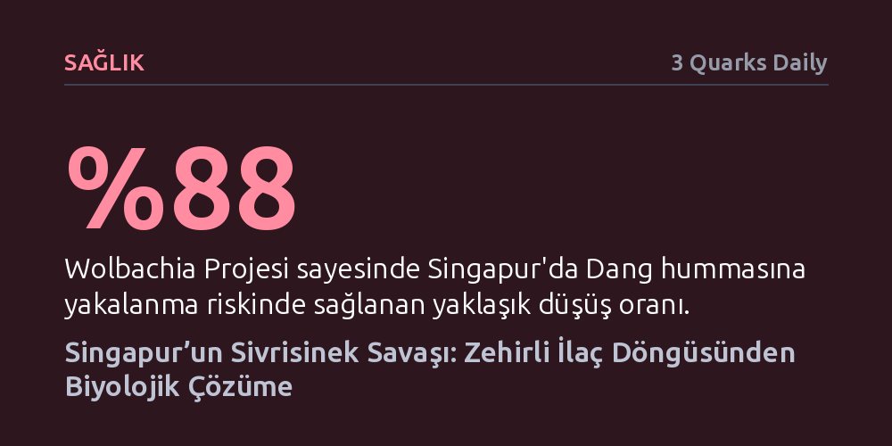

SAGLIK · 3 Quarks Daily · 2026-10-12
Singapur, tropikal iklimine rağmen Dang humması ve sıtmayı önce ekosisteme zarar veren kimyasallarla bastırdı; ardından Wolbachia bakterisiyle sivrisinekleri yüzde 90 azaltarak biyolojik yönteme geçti. Bu biyolojik hamle, Dang humması riskini yüzde 88 düşürerek kimyasal ilaç bağımlılığını sona erdirdi.
Halk sağlığını tehdit eden salgınlarla mücadelenin çevreyi zehirleyen kimyasallara mahkûm olmadığını, hedefe yönelik biyolojik teknolojilerle ekolojik dengenin yeniden kurulabileceğini gösterir.

Güneydoğu Asya’da sivrisinek ısırıkları ve Dang humması günlük yaşamın olağan bir parçası kabul edilirken, Ekvator’un hemen bir derece kuzeyinde yer alan Singapur’a adım atan birinin ilk fark ettiği şeylerden biri, açık tenle ve gün batımında bile tek bir sivrisinek tarafından ısırılmamasıdır. Tertemiz, düzenli ve ileri teknolojiye sahip bu ada devletinde bu durumu modern şehirciliğin kendiliğinden bir lütfu sanmak kolaydır; oysa tropikal bir coğrafyada sivrisineksiz bir açık alan doğal yollarla neredeyse imkânsızdır.
Bu konforun ardındaki sır, binaların etrafını saran devasa beyaz duman bulutlarıyla kendini ele verir. Singapur yönetimi ve mülk sahipleri, on yıllar boyunca konutlardan ofis kulelerine, parklardan alışveriş merkezlerine kadar her yeri fümigasyon adı verilen zehirli bir kimyasal sisle aralıksız ilaçlamıştır. 1982’de sıtmayı tamamen yok eden ülke, bağımsızlığını kazandığı 1965 yılında hanelerin yüzde 48’inde bulunan sivrisinek üreme alanlarını, bu amansız kimyasal taarruz sayesinde 1990’larda yüzde 1’in altına indirmeyi başarmıştır.
Zehirli kimyasal dumanın en yıkıcı kusuru, hedef gözetmemesidir. Püskürtülen kimyasal sis yalnızca sivrisinekleri değil; kelebekleri, kınkanatlıları, örümcekleri ve yusufçukları da yok eder. Yazarın da vurguladığı gibi, "Sivrisineksiz bir dünya, aynı zamanda kelebeksiz bir dünyadır." Üstelik bu kitlesel kıyım sivrisineklerin doğal avcılarını da ortadan kaldırdığı için Singapur’u kimyasal dumanlamaya her geçen gün daha bağımlı kılan tehlikeli bir kısır döngü yaratmıştır.
Bu kimyasal bağımlılığın faturası besin zincirinin üst basamaklarına da ağır yansımıştır. Böceklerle beslenen ötücü kuşlar, yarasalar ve kertenkeleler doğrudan besinsiz kalırken, zehirlenmiş böcek ölülerini yiyen yaban tavukları ve bahçe kuşları ikincil zehirlenmelerle karşılaşmıştır. Şehir sularına karışan kimyasal akıntılar balık ölümlerine yol açmış; ülkenin kurucu lideri Lee Kuan Yew’in gurur duyduğu "bahçe şehir" vizyonu, tozlaştırıcılarını yitirmiş steril bir beton ormanına dönüşme tehlikesiyle karşı karşıya kalmıştır.
Kimyasal ilaçlamanın sürdürülemez maliyetini gören Singapur, 2016 yılında rotasını biyoteknolojiye çevirerek "Wolbachia Projesi"ni başlattı. Bu yöntemde, laboratuvarda doğal bir bakteri olan Wolbachia ile enfekte edilmiş erkek sivrisinekler doğaya salınır. Yalnızca dişi sivrisinekler kan emip ısırdığı için, doğaya bırakılan erkekler ne insanları ısırır ne de diğer canlılara bakteri veya hastalık bulaştırır.
Bakteri taşıyan bu erkekler vahşi doğadaki dişilerle çiftleştiğinde, biyolojik uyumsuzluk nedeniyle yumurtalar çatlamaz ve popülasyon hızla çöker. Bu hedefe yönelik müdahale sayesinde son on yılda sivrisinek popülasyonu yüzde 80 ila 90 oranında gerilerken, Dang hummasına yakalanma riski yaklaşık yüzde 88 düşmüştür. Devlet rutin kimyasal dumanlamayı neredeyse tamamen terk etmiş ve 6,1 milyonluk ülkede Dang humması vakaları 2025 itibarıyla 3.990 ile tarihin en düşük seviyesine inmiştir.
Singapur’un tecrübesi, çevre koruma ile halk sağlığı arasındaki hassas dengeye dair çarpıcı dersler sunar. Başlangıçta uygulanan yoğun ilaçlama ekolojiye ağır darbeler vurmuş olsa da, ölümcül salgınların kökünün kazınması sayısız çocuğun hayatta kalmasını sağlamıştır. Sağlıklı bir toplum ve güvenli bir çevre, yabancı yatırımların önünü açarak ülkeyi iki nesilde küresel bir ekonomik güce dönüştürmüş; böylece yeni kuşaklar eğitim ve refah güvencesiyle büyüyebilmiştir.
Asıl ilham verici ders ise Singapur’un benimsediği sürekli iyileştirme anlayışıdır. Çoğu ülke kimyasal ilaçlamanın getirdiği yıkıcı yan etkileri kaçınılmaz bir maliyet olarak kabullenip devam edecekken, Singapur kendi yarattığı ekolojik çıkmazdan yenilikçi biyoteknolojiyle çıkmayı başarmıştır. Sivrisineklerin tozlaşma ve sulak alan temizliği gibi ekolojik işlevleri uzun vadede yeni sorular doğurabilecek olsa da, krizleri yeni inovasyonlarla aşma kararlılığı küresel halk sağlığı için örnek bir model oluşturmaktadır.